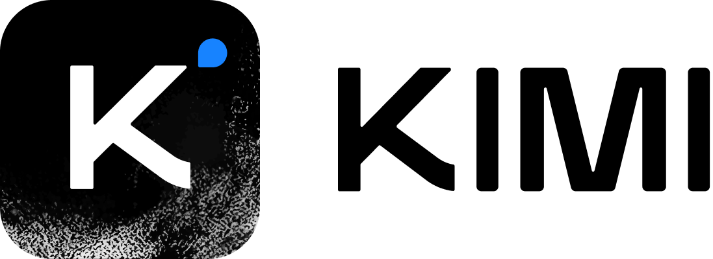

Hugging Face X Discord ModelScope
📰 Tech Blog | <b>🚀 API Quickstart</b>
1. Model Introduction
Kimi K3.1 Pro is an open-weight, natively multimodal agentic model, and our most capable 3T-class model to date. Post-trained from Kimi K3 with large-scale joint reinforcement learning across hundreds of downstream domains, it is the first model in the K3.1 series. With a 1-million-token context window, Kimi K3.1 Pro delivers substantial improvements in coding, 3D creation, financial research, factual accuracy, and other agentic capabilities.
2. Model Summary
| Architecture | Mixture-of-Experts (MoE) |
| Total Parameters | 2.8T |
| Activated Parameters | 104B |
| Number of Layers | 93 |
| Number of Dense Layers | 1 |
| Attention-Layer Composition | 69 KDA + 24 Gated DSA* |
| Attention Hidden Dimension | 7168 |
| Number of Attention Heads | 96 |
| DSA Index Head Dimension | 128 |
| DSA Index Number of Heads | 32 |
| DSA Index Top-K | 2048 |
| Latent MoE Dimension | 3584 |
| MoE Hidden Dimension (per Expert) | 3072 |
| Number of Experts | 896 |
| Selected Experts per Token | 16 |
| Number of Shared Experts | 2 |
| Vocabulary Size | 160K |
| Context Length | 1048576 |
| Attention Mechanism | KDA & Gated DSA |
| Activation Function | SiTU-GLU |
| Vision Encoder | MoonViT-V2 |
| Parameters of Vision Encoder | 401M |
| Quantization | MXFP4 weights / MXFP8 activations (quantization-aware training) |
| Modality | Text, Image |
<sup>*</sup> Compared with Kimi K3, we replace the full-attention Gated MLA layers with Gated DeepSeek Sparse Attention (Gated DSA) layers for more efficient long-context modeling.
3. Evaluation Results
Unless otherwise specified, all Kimi K3.1 Pro results use reasoning effort max, temperature = 1.0, and top-p = 0.95. A dash (—) means that the source table does not report a score. Higher scores are better except where the benchmark name explicitly states lower is better; Elo scores and other benchmark-specific metrics are not directly comparable with accuracy or pass-rate scores.
| Benchmark | Kimi K3.1 Pro (max) | Claude Fable 5.1 (max, w/ fallback) | GPT-6 Astra (max, w/ fallback) | Claude Opus 5.5 (max, w/ fallback) | DeepSeek-V4.1-Flash-1017 (max) | GLM-5.3 (max) |
|---|---|---|---|---|---|---|
| Coding | ||||||
| Terminal-Bench 4.0 | 65.7 | 57.9 | 58.2 | 66.4 | 42.3 | 41.8 |
| Terminal-Bench-Science 0.1 | 38.1 | 40.0 | 68.1 | 63.3 | 15.7 | 8.1 |
| SWE Marathon v1.1 | 51.7 | 45.6 | 42.5 | 46.3 | 40.0 | 42.5 |
| BenchCAD w/o tools | 72.8 | 60.6 | — | 73.0 | 41.2 | — |
| BenchCAD w/ tools | 92.7 | 92.6 | 95.9 | 96.2 | 81.6 | — |
| Program Bench | 31.5 | 53.5 | 50.0 | 65.0 | 29.1 | 19.0 |
| DeepSWE v1.1 | 75.5 | 67.4 | 74.1 | 74.2 | 77.0 | 66.9 |
| PostTrain Bench v1.2 | 36.5 | 44.6 | 41.9 | 43.8 | 30.5 | 34.5 |
| Kimi Code Bench 2.0 (Internal) | 77.1 | — | — | — | 76.1 | 61.7 |
| Kimi Code Bench 3.0 Long-horizon (Internal) | 61.2 | 58.8 | 66.5 | 58.5 | 51.5 | 45.5 |
| Agentic | ||||||
| HLE-Full w/ tools | 70.0 | 65.6 | 57.2 | 67.7 | 58.8 | 62.5 |
| BrowseComp | 92.1 | — | 91.5 | 90.8 | — | — |
| BioMysteryBench | 80.6 | 81.6 | 78.9 | 81.9 | 80.0 | 79.6 |
| CharXiv (RQ) w/ python | 93.4 | 92.7 | 92.8 | 93.8 | 85.6 | — |
| MMMU-Pro w/ python | 90.0 | 88.4 | 87.8 | 89.8 | 82.5 | — |
| GDP.pdf w/ python | 85.7 | 83.8 | 85.5 | 83.9 | 73.0 | — |
| ChartoGraphy w/ python | 90.2 | 88.4 | 91.0 | 89.0 | 83.0 | — |
| BabyVision w/ python | 95.4 | 95.1 | 96.6 | 97.7 | 92.5 | — |
| ZeroBench_main w/ python (pass@5) | 63.0 | 59.0 | 58.0 | 61.0 | 51.0 | — |
| Agents' Last Exam (ALL) | 43.2 | — | 41.8 | 42.6 | 37.7 | 26.2 |
| Agents' Last Exam (CLI) | 44.2 | — | 44.2 | 40.7 | 36.0 | 29.4 |
| Automation Bench-AA | 73.3 | 59.4 | 68.5 | 69.5 | 66.6 | 62.2 |
| GDPval-AA v2.1 (Elo-score) | 1846 | 1754 | 1573 | 1866 | 1746 | 1650 |
| AA-Briefcase v1.1 (Elo-score) | 1678 | 1672 | 1569 | 1803 | 1570 | 1507 |
| APEX-Agents | 69.4 | 68.6 | 64.7 | 73.5 | 69.8 | 56.6 |
| OfficeQA Pro v2 | 64.4 | 54.5 | 54.4 | 62.2 | 40.4 | 31.1 |
| OfficeQA Pro | 67.4 | 68.6 | 66.2 | — | 62.4 | 58.6 |
| Frontier Finance | 58.6 | 60.8 | 45.0 | 56.7 | 54.5 | 57.5 |
| Harvey Legal Agent | 23.7 | 19.1 | — | — | 21.0 | — |
| HANDBOOK.md | 44.6 | 38.8 | — | 41.5 | 28.9 | 20.8 |
| OSWorld V2.1 | 79.6 | 80.7 | 75.8 | 81.8 | 69.3 | — |
| Business Operation (Internal) | 37.8 | 30.7 | 32.3 | — | 8.9 | 18.6 |
| DECK-Arena (Internal, Elo-score) | 1456 | — | 1423 | 1253 | 1231 | 1119 |
| Design Bench (Internal, Elo-score) | 957 | — | 1076 | 927 | 863 | 718 |
| Kimi Hallu Bench Hard w/ tools (Internal, lower is better) | 8.3 | 23.3 | 5.5 | 15.0 | 23.3 | 22.6 |
| Reasoning & Knowledge & Multimodal | ||||||
| GDP.pdf | 34.6 | 27.6 | 34.2 | 30.6 | 17.2 | 11.2 |
| HLE-Full | 51.1 | 57.6 | 53.6 | 59.8 | 42.6 | 43.0* |
| HLE-Diamond | 39.4 | 55.1 | 65.8 | 60.9 | 21.6 | 25.1* |
| GPQA-Diamond | 94.2 | 93.7 | 96.1 | 93.9 | 92.2 | 91.7 |
| CharXiv (RQ) | 89.0 | 88.8 | 90.0 | 92.1 | 77.0 | — |
| MMMU-Pro | 84.1 | 86.3 | 86.9 | 87.7 | 80.6 | — |
| ZeroBench_main (avg@5 / pass@5) | 29.8 / 39.0 | 23.0 / 35.0 | 43.2 / 52.0 | 35.0 / 43.0 | 11.8 / 23.0 | — |
| PerceptionBench | 68.3 | 63.0 | 77.6 | 72.1 | 47.7 | — |
| Kimi Hallu Bench w/o tools (Internal, lower is better) | 5.4 | 11.4 | 4.2 | 6.8 | 13.1 | 14.8 |
| Cyber Security | ||||||
| ExploitBench | 74.7 | 83.0 | 100 | 91.0 | — | 54.4 |
| ExploitGym | 20.7 | 30.4 | 42.4 | 34.5 | — | 15.0 |
| xdev-bench-hard (Internal) | 81.0 | — | — | — | 85.7 | 57.1 |
<b>Evaluation Footnotes</b>
Coding benchmarks
- Terminal-Bench 4.0. Kimi K3.1 Pro is evaluated with the Claude Code harness. The DeepSeek-V4.1-Flash-1017 score is taken from its release blog. All remaining scores are the maximum values reported in model blog posts or on the official Terminal-Bench leaderboard.
- Terminal-Bench-Science 0.1. Kimi K3.1 Pro is evaluated with Claude Code. Internal evaluation of DeepSeek-V4.1-Flash-1017 yields 9.3; the table instead reports 15.7 for the older DeepSeek-V4.1-Flash from the official leaderboard. All remaining scores are from the Terminal-Bench-Science leaderboard.
- SWE-Marathon v1.1. Kimi K3.1 Pro and DeepSeek-V4.1-Flash-1017 are evaluated with Claude Code. Other scores are from the official leaderboard.
- ProgramBench. The table reports binary scores: a task receives 1 if its ProgramBench score is at least 95%, and 0 otherwise. K3.1 Pro is evaluated with Claude Code. DeepSeek and GLM scores are taken from the DeepSeek release blog; remaining scores are from Vals AI.
- DeepSWE v1.1. K3.1 Pro is evaluated with Claude Code. Other scores come from the respective technical reports for GPT-6 Astra, Claude Opus 5.5, Claude Fable 5.1, DeepSeek-V4.1-Flash-1017, and GLM-5.3.
- PostTrainBench. K3.1 Pro and DeepSeek-V4.1-Flash-1017 are evaluated internally on v1.2 with Claude Code and H20 GPUs rather than H100 GPUs. For stable evaluation, all judge models use DeepSeek-V4.1-Flash-1017 at maximum effort, which best matched the official GPT-5.6-Terra (xhigh) judge in testing. Other scores are from the official leaderboard.
- Kimi Code Bench 2.0 and Kimi Code Bench 3.0 Long-horizon. These are internal benchmarks. K3.1 Pro is evaluated with Claude Code; all other models use their maximum-effort setting. Proprietary-model testing may involve fallback behavior.
- BenchCAD. Open models are evaluated on 1,000-case subsets randomly sampled from the 17,900-case Vision2Code dataset at maximum reasoning effort. With-tools results use Claude Code; without-tools results use single-shot generation with official prompts and scoring. Claude scores are from the Opus 5.5 System Card, and GPT-6 Astra's with-tools score is from its official report. GPT-6 Astra has no reported without-tools score.
Agentic benchmarks
- BioMysteryBench. Uses the official v11 release, with Kimi K3 as judge. K3.1 Pro uses Kimi Code; GLM-5.3 and DeepSeek-V4.1-Flash-1017 use Claude Code; GPT-6 Astra uses Codex. Claude scores are from official system cards.
- Agents' Last Exam. Uses the official v1.1 release, comprising 122 tasks, including 86 CLI tasks. Runs that bypass stated requirements receive zero. DeepSeek and Kimi are evaluated with Claude Code and Kimi Code, respectively; other results are from the official benchmark website.
- OfficeQA Pro and OfficeQA Pro v2. GPT-6 Astra uses Codex; other models use Claude Code. Each task provides the complete PDF corpus as page images without machine-readable text. External-model trajectories that retrieve reference answers online receive zero for those tasks.
- Frontier Finance. Evaluated with the official Finance Agent v2 harness.
- HANDBOOK.md. Evaluated with the official OpenHands-based harness, using tasks from the benchmark's early open-source v1 release.
- Harvey Legal Agent. Evaluated on 1,251 public tasks with Artificial Analysis's Stirrup harness. The reported score is the all-pass rate: the percentage of tasks passing every rubric criterion.
- OSWorld V2.1. Kimi models use the Kimi Agent harness in the official OSWorld v2 repository. GPT-6 Astra's score is taken from Muse Wonder's technical report.
- DECK-Arena and Design Bench. DECK-Arena evaluates presentation generation on real-world queries; Design Bench covers graphic design through direct and reference-image few-shot prompting. Both evaluate python-pptx, pptxjs, and Kimi's in-house DSL in a harness with integrated search and image generation. The automated grader is calibrated on more than 10,000 human judgments.
- BrowseComp. Uses context compaction triggered at 200K tokens and a 500-step maximum. If the limit is reached, the agent is forced to answer before judging. All runs use
temperature = 1.0andtop-p = 1.0. - GDPval-AA v2.1, AA-Briefcase v1.1, and AutomationBench-AA. Scores are cited from Artificial Analysis. APEX-Agents. Scores are cited from the official leaderboard.
- Tool-augmented multimodal evaluations. GDP.pdf w/ python, ZeroBench w/ python, and ChartoGraphy w/ python are averaged over five runs; other multimodal benchmarks with Python are averaged over four. For GDP.pdf w/ python, each original PDF is sent to a sandbox for IPython processing. Responses are graded against each rubric criterion using Gemini-3.5-Flash at medium reasoning effort and the official judging prompt. The reported score is the task-macro mean rubric pass rate.
Reasoning, knowledge, and multimodal benchmarks
- GDP.pdf. Each PDF is provided as page images resized to a longest edge of 1,152 pixels, interleaved with Docling-extracted text in page order. Responses are graded against each rubric criterion using Gemini-3.5-Flash Medium and the official judging prompt. The table reports the strict pass rate among fully scored responses. GLM-5.3 Max and DeepSeek-V4.1-Flash-1017 Max scores are cited from Artificial Analysis.
- HLE-Full and HLE-Diamond. The full evaluation sets contain 2,500 and 1,000 questions, respectively. For scores marked
*, accuracy is reported on the text-only subset. - Run counts. GDP.pdf, ZeroBench, and ChartoGraphy are averaged over five runs; other multimodal benchmarks are averaged over four.
- MMMU-Pro. Evaluated using the official protocol, preserving the original input order and prepending images to the text input.
- PerceptionBench. An in-house benchmark focused on atomic visual perception capabilities.
- Kimi Hallucination Benchmark. Evaluates factual accuracy on an internal set of challenging, de-identified prompts drawn from practical work tasks. The table reports claim-level hallucination rates assessed by fact-checking agents.
Cybersecurity benchmarks
- ExploitBench. K3.1 Pro is evaluated with the official harness under a 300-turn budget. The table reports the pass@5 maximum-capability score: for each environment, the best of five seeds is scored by capability flags reached out of 16; arbitrary code execution counts as all 16 capabilities. Comparison scores are from OpenAI, Anthropic, and GLM-5.3.
- ExploitGym. K3.1 Pro is evaluated with Kimi Code under a six-hour wall-clock budget per task. GPT-6 Astra, Claude, and GLM comparison scores are taken from their respective official reports, with Claude results using the same six-hour budget.
- xdev-bench-hard. K3.1 Pro is evaluated with Kimi Code; GLM-5.3 and DeepSeek-V4.1-Flash-1017 use Claude Code. The internal benchmark contains expert-curated, source-code-based vulnerability discovery and exploitation tasks. The final model is evaluated at pass@3 over a random subset of runs, without hard timeouts or output-token limits.
4. Deployment and Availability
---
5. Model Usage
The thinking effort of Kimi K3.1 Pro is configured with the top-level reasoning_effort request field, which supports "low", "high", and "max" (default "max").
For multi-turn conversations and tool calls, Kimi K3.1 Pro requires the complete assistant message returned by the API to be passed back to messages as-is — including reasoning_content and tool_calls, not just content:
pythonimport openai def chat_with_preserved_thinking(client: openai.OpenAI, model_name: str): messages = [ { "role": "user", "content": "Tell me three random numbers." }, { "role": "assistant", "reasoning_content": "I'll start by listing five numbers: 473, 921, 235, 215, 222, and I'll tell you the first three.", "content": "473, 921, 235" }, { "role": "user", "content": "What are the other two numbers you have in mind?" } ] response = client.chat.completions.create( model=model_name, messages=messages, stream=False, max_tokens=4096, reasoning_effort="max", ) # the assistant should mention 215 and 222 that appear in the prior reasoning content print(f"response: {response.choices[0].message.reasoning}") return response.choices[0].message.content
For full guides and examples (vision input, structured output, partial mode, tool choice, dynamic tool loading, context caching), see the Kimi K3.1 Pro Quickstart and Thinking Effort.
6. License
Kimi K3.1 Pro is released under the Kimi K3.1 Pro License.
7. Contact Us
If you have any questions, please reach out at support@moonshot.ai.